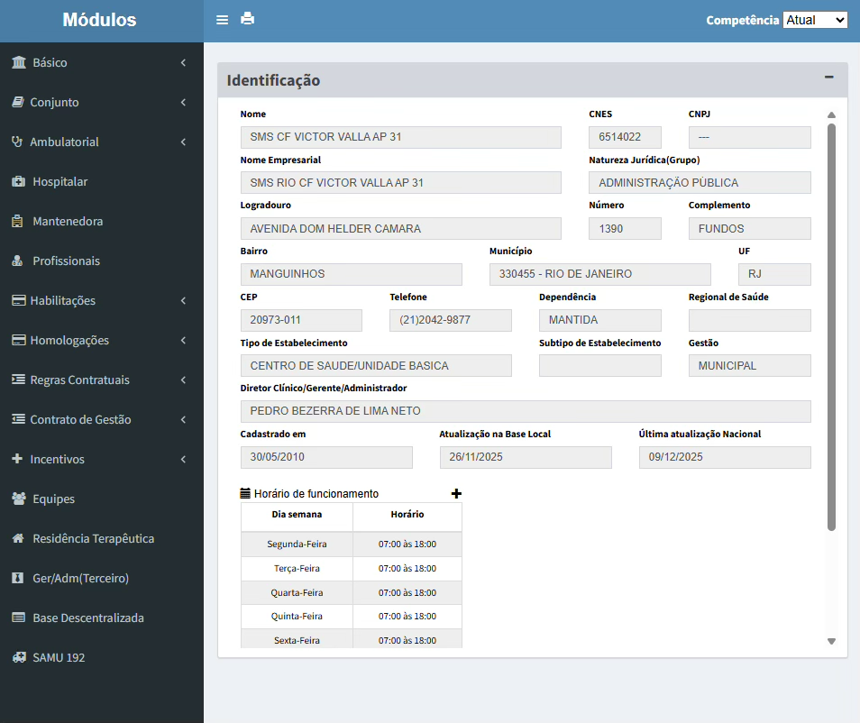

Módulo 3 | Aula 2
Sistemas de Informações de Produção
Introdução aos SIS de produção
Para compreender os SIS administrativos ou de produção é necessário primeiramente situá-los no contexto dos Sistemas de Informação em Saúde (SIS). De modo geral, podemos classificar os SIS quanto à sua função original em dois grupos: administrativos e epidemiológicos.
Diferentemente das estatísticas vitais (SIM e SINASC), os sistemas que exploraremos a seguir possuem uma natureza originalmente administrativa ou de produção. Isso quer dizer que eles foram concebidos para gerenciar o financiamento e a produção de serviços do SUS.
Apesar disso, ao longo do tempo esses sistemas tornaram-se fontes indispensáveis de dados epidemiológicos. Por meio deles é possível analisar não apenas o volume e o valor das produções, mas também características de quem acessa os serviços, quais deles são mais acessados, realizar análises de qualidade e adequação e, de modo geral, estudar como a rede de saúde é utilizada.
Outra distinção essencial para esta aula é a unidade de análise. Enquanto as estatísticas vitais (SIM e SINASC) são centradas no indivíduo e em eventos únicos (nascimentos e óbitos), os sistemas administrativos são centrados em eventos que se repetem ao longo da vida. Isso significa que uma mesma pessoa pode gerar múltiplos registros se for internada diversas vezes ou se realizar vários procedimentos, como consultas médicas e exames.
Para nos aprofundarmos nesses sistemas, é importante entender a dualidade entre o cenário hospitalar e o ambulatorial. A principal diferença entre os registros no âmbito ambulatorial e no hospitalar está na complexidade do cuidado e na necessidade de permanência (internação) do paciente no estabelecimento de saúde.
O cenário hospitalar refere-se, estritamente, às internações, que são registradas no Sistema de Informações Hospitalares (SIH). Uma internação geralmente ocorre quando o paciente ocupa um leito hospitalar por um período superior a 24 horas. As internações tendem a ter volume menor quando comparadas aos registros ambulatoriais. Isso se dá justamente por conta da maior complexidade dos casos registrados em hospitais. Quando comparado ao âmbito ambulatorial, a informação hospitalar costuma refletir casos de maior gravidade e mais alto custo.
O cenário ambulatorial não abarca apenas consultas de rotina ou de baixa complexidade. No âmbito do SUS, o termo “ambulatorial” abarca tudo aquilo que não gera internações. Isso inclui vacinas, consultas médicas na Atenção Primária e até procedimentos de altíssima complexidade. Esses procedimentos podem estar registrados no SIA ou no SISAB/SIAB/e-SUS, dependendo do período em que ocorreram, do tipo de estabelecimento e outros fatores.
A seguir estudaremos alguns sistemas que armazenam, tratam e disseminam informações do cenário hospitalar e do ambulatorial. O SIH é um sistema que permite analisar o perfil de morbidade e características das internações, já o SIA capta os atendimentos que não exigem hospitalização. Um ponto importante no desenvolvimento desta aula será o estudo da informatização da Atenção Primária à Saúde (APS) no Brasil. Veremos como a transição do antigo Sistema de Informação da Atenção Básica (SIAB) para a atual estratégia e-SUS APS, que inaugura o Sistema de Informação em Saúde para Atenção Básica (SISAB), começa a evidenciar uma mudança de paradigma. Com a mudança, além dos avanços tecnológicos, deixamos de focar apenas na contagem de procedimentos, ou seja, na produção, para uma abordagem mais centrada no indivíduo e no território.
Para conhecer o fluxo desses dados, será preciso se familiarizar com algumas ferramentas transversais, como a CID-10, a tabela unificada de procedimentos (SIGTAP) e o Cadastro Nacional de Estabelecimentos de Saúde (CNES).
A CID-10
A Classificação Estatística Internacional de Doenças e Problemas Relacionados com a Saúde, Décima Revisão (CID-10), lançada no final da década de 1990, é uma ferramenta epidemiológica normativa desenvolvida pela Organização Mundial da Saúde (OMS). Essa classificação tem como objetivo principal padronizar internacionalmente a codificação de doenças, sinais, sintomas, achados anormais e causas externas (OMS, 1999). Com a padronização, a CID-10 permite comparar informações em nível mundial. Esse tipo de padronização é essencial, por exemplo, para detectar rapidamente emergências sanitárias. A CID-10 é composta por 22 capítulos e cada doença é representada por um código.
Saiba mais!
Saiba mais sobre a CID-10: navegue pelos 22 capítulos.
Apesar de sua importância histórica, a CID-10 reflete o conhecimento daquela época. Posteriormente, a OMS lançou a CID-11, que passou a vigorar a partir de 2022, e traz uma estrutura totalmente digital, mais flexível e integrada. Atualmente, o Brasil encontra-se em fase de planejamento para essa transição, prevista para 2027.
Explore a CID-11!
A versão de lançamento da CID-11 foi disponibilizada pela OMS de forma totalmente digital. Nessa versão foram criadas soluções como a combinação de códigos de extensão para detalhamento do agravo, além de novas seções sobre Distúrbios do Sono, Medicina Tradicional e Saúde Sexual. Clique aqui para explorar!
O SIGTAP
Para operar os SIS corretamente, é imprescindível compreender o SIGTAP (Sistema de Gerenciamento da Tabela de Procedimentos, Medicamentos, Órteses/Próteses e Materiais Especiais do SUS). Esse sistema foi estabelecido pela Portaria nº 321/GM, de 8 de fevereiro de 2007, com o objetivo de unificar as antigas tabelas de procedimentos ambulatoriais e hospitalares para melhorar a informação em saúde e integrar as bases de dados, facilitando o planejamento, a regulação e a avaliação do sistema.
O SIGTAP estabelece a nomenclatura e a codificação padronizada para todos os procedimentos do SUS. Ele também é a base para o cálculo dos valores a serem pagos aos prestadores de serviços.
Desvendando o SIGTAP Web
Onde acessar?
O portal oficial para consulta é: http://sigtap.datasus.gov.br
Como navegar?
O SIGTAP organiza tudo em uma hierarquia de 10 dígitos:
Grupo (1º dígito): a grande área (ex: 03 - Procedimentos Clínicos).
Subgrupo (2º e 3º): a especialidade (ex: 03.01 - Consultas).
Forma de Organização (4º ao 6º): o detalhamento (ex: 03.01.01 - Consultas Médicas).
Sequencial (7º ao 10º): o procedimento específico.
O que você encontra?
Descrição: Nome e complexidade.
Valores: Quanto o SUS paga por sua realização.
Atributos: Idade e sexo do usuário adequados à realização do procedimento e média de permanência hospitalar.
Compatibilidades: Doenças CIDs (doenças) e profissionais (CBO) aceitam aquele código.
Instrumento de Registro: BPA, AIH, RAAS.
O CNES
O CNES é a base de dados oficial de todos os estabelecimentos de saúde do país, sejam hospitais, clínicas, laboratórios, consultório e outros, independentemente de seu tipo de administração. Isso significa que nela estão registrados estabelecimentos de saúde, sejam eles públicos, privados ou filantrópicos. Sem o número do CNES, o estabelecimento funciona de forma irregular e não recebe pagamentos do SUS ou de operadoras de planos de saúde. Nesse sistema, estão disponíveis informações de leitos, equipamentos e serviços disponíveis e outras informações relevantes, como recursos humanos e infraestrutura.
Dica!
Você pode consultar as informações de um estabelecimento pelo nome, atendimento pelo SUS, estado, município, tipo de gestão e natureza jurídica. Acesse: https://cnes.datasus.gov.br/
Observe o exemplo da Unidade Básica de Saúde, localizada em Manguinhos, Rio de Janeiro.
Figura 1 - Print de consulta no CNES realizada em 10/12 de 2025.

Fonte: CNES (2025).